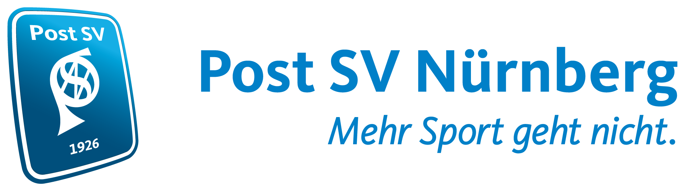
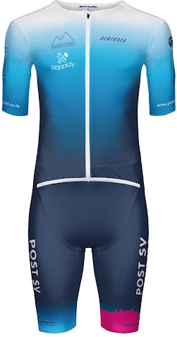

Liga-Teams und Sponsoring

Triathlon-Ligateams · Sponsoring
Aus drei
Disziplinen wird
ein Team.
Post SV Nürnberg Triathlon sucht starke Partner für die nächsten sportlichen Schritte.
Triathlon entdecken Teamfoto wird ergänzt
NÜRNBERG · BAYERN
01
Einsteigen
Was ist Triathlon?
Schwimmen.
Radfahren.
Laufen.
Triathlon verbindet Schwimmen, Radfahren und Laufen ohne Unterbrechung zu einem Rennen.
Der Sport ist so vielseitig wie seine Athletinnen und Athleten: Vom Schnuppertriathlon mit kurzen Strecken bis hin zur Langdistanz gibt es für jedes Leistungsniveau den passenden Wettkampf. Dazwischen liegen Sprint-, Kurz- und Mitteldistanzen, die ganz unterschiedliche Ziele und Herausforderungen bieten.
Weltweit bekannt ist der Ironman Hawaii. Direkt vor unserer Haustür zieht die Challenge Roth jedes Jahr Athletinnen, Athleten und Zuschauer aus aller Welt an. Mit dem Nürnberg Triathlon am Wöhrder See hat auch Nürnberg seit Kurzem ein eigenes großes Rennen.
Doch Triathlon ist nicht nur Einzelsport. In der Liga treten Athletinnen und Athleten als Mannschaft an. Beim Post SV Nürnberg bilden vier Ligateams ein gemeinsames Aufgebot und unterstützen sich über die Saison hinweg.
02
Triathlon beim Post SV Nürnberg
Unser Verein
Eine Abteilung.
Viele Wege.
Der Post SV Nürnberg vereint über 18.000 Mitglieder in 25 Abteilungen. Rund 350 Menschen gehören zur Triathlonabteilung – vom ersten Triathlon bis zum Ligastart.
Vom absoluten Anfänger bis zu Profiathleten: Bei uns ist Raum für viele sportliche Wege. In der Triathlonabteilung sind kleine Kinder ebenso zuhause wie Athletinnen und Athleten im hohen Alter. Was sie verbindet, ist die Freude an Bewegung und am gemeinsamen Sport.
Zuletzt gewannen Tobias Heining und Clara-Maria Bader beim Nürnberger Triathlon die olympische Distanz. Über diese Erfolge wurde mehrfach mit Bildern in Zeitungen und Onlineartikeln berichtet und so der Post SV Triathlon sichtbar gemacht. In der Vergangenheit erreichte er außerdem eine Top-10-Platzierung bei der Challenge Roth und errang den Gesamtsieg beim Rothsee-Triathlon. Mehrere Starterinnen und Starter aus unseren Reihen waren bereits beim Ironman Hawaii dabei.
03
Gemeinsam im Ligatriathlon
Ligateams
Triathlon ist Einzelsport.
Unsere Stärke ist das Team.
Unsere Ligateams sind der Kern dieses Auftritts. Sie trainieren und reisen gemeinsam, feiern ihre Erfolge als Team und vertreten den Post SV Nürnberg auf den Wettkampfstrecken Bayerns.
In der Triathlon-Liga starten Athletinnen und Athleten nicht nur für sich. Ihre Leistungen fließen in ein gemeinsames Ergebnis ein. Über eine Saison treten die Teams bei vier bis fünf Rennen bayernweit gegeneinander an.
Die nationale Spitze bildet die Bundesliga, gefolgt von der 2. Bundesliga. In Bayern schließen sich Regionalliga, Bayernliga und Landesliga an. Jede Liga bietet Teams die Chance, sich über mehrere Wettkämpfe einer Saison sportlich zu messen und weiterzuentwickeln.
2026 haben unsere Frauen den Aufstieg in die Regionalliga geschafft und standen in jedem Rennen auf dem Treppchen. Damit haben sie unsere Ambition, ein starkes und konkurrenzfähiges Team aufzubauen, eindrucksvoll unterstrichen.
Unsere Männer waren in der Regionalliga sehr erfolgreich. Ob der Sprung in die 2. Bundesliga gelingt, entscheidet sich erst im späten Herbst, wenn feststeht, ob dort Plätze frei werden.
Die Frauen- und Männerteams in der Landesliga machen unseren Breitensportgedanken im Ligabetrieb erlebbar. Sie ermöglichen den Einstieg in den Ligatriathlon und bilden zugleich eine breite, stabile Basis für die weitere Entwicklung unserer ambitionierten Teams.
Für potenzielle Partner bedeutet das: Rund 25 Athletinnen und Athleten starten über die Saison verteilt bei verschiedenen Rennen in Bayern. So kann Ihre Marke den Post SV Triathlon zu vielen Wettkampforten begleiten und dort wiederholt sichtbar sein.
04
Sie als unser Partner
Ihre Sichtbarkeit
Ein Auftritt,
der mitgeht.
Ab der Saison 2027 planen wir einen neuen, moderneren Auftritt für unsere Wettkampfbekleidung. Das hier gezeigte Design vermittelt einen ersten Eindruck davon.

LOGO FOLGT 01 LOGO FOLGT 02 LOGO FOLGT 03Unsere Partnersuche richtet sich gezielt an die vier Ligateams des Post SV Triathlon. Mit Partnern möchten wir ihre Starts und Reisen, Wettkampfmaterial und einen professionellen Teamauftritt ermöglichen. Partner können auf unserer Wettkampfbekleidung sichtbar werden, sich authentisch in unserem Ligaalltag präsentieren und von unseren Online-Auftritten – vor allem auf Instagram – profitieren.
05
Der nächste Schritt
Kontakt
Lassen Sie uns
Nürnberg bewegen.
Sie möchten unsere Ligateams unterstützen oder mehr über eine Partnerschaft erfahren? Melden Sie sich jederzeit bei uns. Wir stellen Ihnen unsere Mannschaften und Ziele gern persönlich vor und besprechen passende Möglichkeiten der Zusammenarbeit.